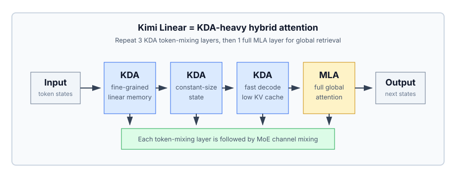
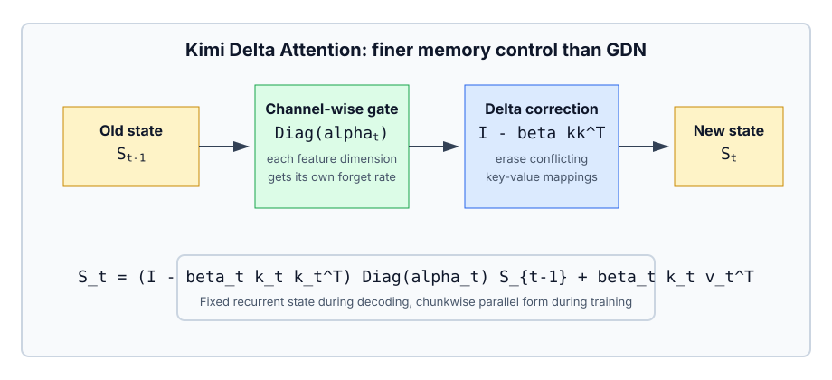
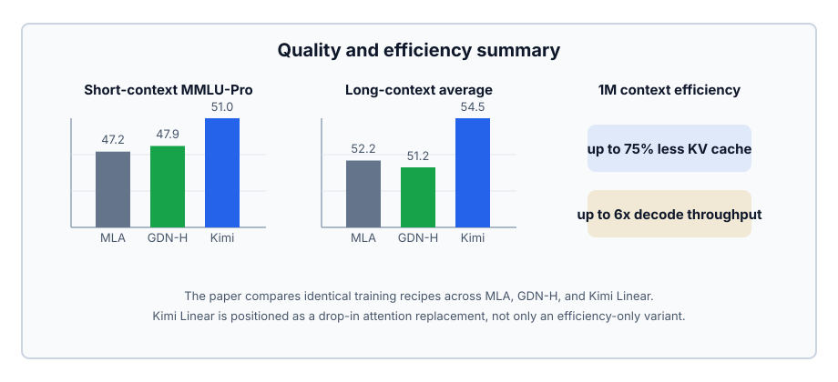

Kimi Linear
Abstract
论文 Kimi Linear: An Expressive, Efficient Attention Architecture 提出了一种面向长上下文和 decoding-heavy 场景的混合线性注意力架构。它的核心模块是 Kimi Delta Attention (KDA)：在 Gated DeltaNet 的 delta rule 基础上，把原本 head-wise 的遗忘门改成更细粒度的 channel-wise gate，让有限大小的 recurrent memory 可以更精细地决定哪些特征应该保留、哪些应该遗忘。
这篇文章最有意思的地方不只是“线性注意力更快”，而是它试图证明：在公平训练设置下，Kimi Linear 可以在短上下文、长上下文、RL scaling 等场景里超过 full attention baseline，同时保留明显的推理效率优势。论文中 48B total / 3B activated 参数的 Kimi Linear 采用 KDA 和 Multi-Head Latent Attention (MLA) 的 layerwise hybrid；相比 full MLA，KV cache 最多降低 ，在 1M context decoding 时吞吐最高提升约 。

Motivation
标准 softmax attention 的问题在长上下文推理里会被放大：计算复杂度随序列长度二次增长，KV cache 随序列长度线性增长。对于 agent、tool-use、长轨迹 RL、长代码仓库分析这类场景，模型不仅要 prefill 很长的上下文，还要在已有长上下文上持续解码，attention 的内存和带宽压力都会变成系统瓶颈。
Linear attention 的吸引力在于把历史压进一个固定大小的状态：
但 vanilla linear attention 又太弱。它会不断累积 key-value association，却没有可靠机制判断旧记忆是否还应该留下，因此长序列里容易出现 memory interference。DeltaNet 把这个过程改写成在线学习：状态 像一个 fast weight memory，每一步用 reconstruction loss 做校正：
Gated DeltaNet 进一步加入遗忘门：
问题是，GDN 的 是比较粗的 scalar/head-wise gate。对于压缩在固定维度状态里的记忆来说，“整头一起忘”不够精细。KDA 要解决的就是这个点：让不同 feature channel 拥有不同遗忘速率。
Method
Kimi Delta Attention
KDA 的核心更新式是：
和 GDN 相比，关键变化是 。这意味着遗忘不再是一个 head 共享的标量，而是每个 key feature dimension 都可以拥有自己的 decay。直觉上，它允许模型在同一个 attention head 里同时维持多种不同寿命的记忆：有些维度快速遗忘局部模式，有些维度保留更长距离的信息。

论文把 KDA 解释成一种更强的 learnable positional mechanism。标准 attention 本身对顺序不敏感，需要 RoPE 等位置编码；而带 gate 的线性注意力可以通过累积 transition matrix 表达 token 之间的相对位置和 recency bias。KDA 的 channel-wise gate 比 GDN 的 scalar gate 更灵活，因此能学出更细的时间尺度和位置偏置。
Hardware-Efficient Chunkwise Algorithm
线性注意力通常有两个执行形态：
- training 时使用 chunkwise parallel algorithm，把 chunk 内的 recurrence 展开成矩阵运算；
- autoregressive decoding 时使用 recurrent kernel，维护固定大小状态。
KDA 的难点在于 fine-grained gate 会引入类似 Diagonal-Plus-Low-Rank (DPLR) 的 transition matrix。一般 DPLR 形式表达力强，但 chunkwise 计算复杂，容易因为额外矩阵乘和精度处理拖慢 kernel。论文的做法是把 DPLR 中两个 low-rank 向量都绑定到 key 相关项上，从而得到一个更适合 delta rule 的专用形式。
在实现上，KDA 借鉴 WY representation 和 UT transform，把 chunk 内一串 rank-1 updates 压成紧凑表示，减少非 matmul FLOPs，让 Tensor Core 更充分工作。论文报告 KDA kernel 相比一般 DPLR formulation 约有 的 operator efficiency 提升。
Hybrid Architecture
Kimi Linear 不是纯线性注意力模型，而是 KDA 和 MLA 的 inter-layer hybrid。具体做法是重复：
这个 3:1 ratio 是 ablation 后的选择。纯 KDA 或过高比例的 KDA 会削弱精确检索能力；MLA 太多则会损失长上下文推理效率。3:1 给了一个比较平衡的点：多数层使用 KDA 降低 KV cache 和 decoding cost，周期性 MLA 层负责全局信息流和精确 retrieval。
架构上每个 block 由 token mixing layer 和 MoE channel mixing layer 组成。KDA 内部还有几个细节：
- 对 使用 short convolution 后接 Swish 和 L2Norm；
- 对输出使用 head-wise RMSNorm；
- 使用 low-rank sigmoid output gate，缓解 Attention Sink；
- MLA 层使用 NoPE，把位置建模责任更多交给 KDA。
Experiments
Synthetic Tasks
论文先在三个合成任务上验证 KDA 的记忆能力：
- Palindrome：输入随机 token 序列，要求反向复制；
- MQAR：multi-query associative recall，需要从上下文中找多个 key 对应的 value；
- Stack：模拟多个 stack 的 push/pop 状态跟踪。
这些任务对 linear attention 很不友好，因为它们要求模型在有限状态里做精确复制、检索和状态维护。结果显示 KDA 在序列长度从 256 增至 2048 时整体准确率最高，且在 Palindrome 和 MQAR 上比 GDN 收敛更快；Mamba2 在该设置下基本失败。这个结果支持了论文的核心直觉：delta rule 提供有目标的 memory correction，fine-grained gate 提供更精细的 retention/forgetting。
Ablation
关键 ablation 结果如下：
- 3:1 KDA/MLA ratio 的 validation PPL 最低，为 5.65；
- 纯 MLA baseline 的 validation PPL 为 5.77；
- 1:1 ratio 接近 3:1，但效率较差；
- 7:1 和 15:1 虽然 KDA 更多，但 validation PPL 变差；
- 去掉 output gate 或去掉 convolution layer 都会带来退化。
这说明 Kimi Linear 的收益不是单个 trick 独立贡献，而是 KDA、少量 full attention、output gate、short convolution 共同形成的架构折中。
Scaling Law
论文在 Moonlight 风格 MoE 模型上做 scaling law，对比 Kimi Linear 和 full MLA。模型激活参数从 653M 到 1.7B，context length 为 4096，并保持训练配置一致。拟合结果显示 Kimi Linear 相比 MLA 有约 compute efficiency。
这个结论值得注意：Kimi Linear 不是只在推理阶段省 cache，而是在训练 compute scaling 上也表现更好。论文也保守地指出，KDA 并没有额外调参，如果专门为 KDA 调 hyperparameter，scaling curve 可能还会更好。
Main Results
主实验使用 48B total parameters、3B activated parameters 的 MoE 模型，比较三种架构：
- full-attention MLA baseline；
- hybrid GDN-H baseline；
- Kimi Linear。
所有模型共享 1.4T pretraining tokens 和相同训练 recipe。在 base model 短上下文评测中，Kimi Linear 在 HellaSwag、ARC-Challenge、BBH、MMLU、MMLU-Pro、TriviaQA、GSM8K、CRUXEval、CEval、CMMLU 等多数任务上领先。比如 MMLU-Pro 从 MLA 的 47.2 提升到 51.0。
SFT 后，Kimi Linear 也在 BBH、MMLU、MMLU-Pro、MMLU-Redux、GPQA-Diamond、AIME 2025、HMMT 2025、PolyMath-en、LiveCodeBench 等任务上整体更强。少数任务如 EvalPlus 上不一定领先，但综合表现超过 MLA 和 GDN-H。
长上下文评测在 128k context 下进行。Kimi Linear 的平均分为 54.5，高于 MLA 的 52.2 和 GDN-H 的 51.2；其中 RULER 达到 84.3，RepoQA 达到 68.5。论文还比较了 Kimi Linear (RoPE)，发现 NoPE MLA + KDA 位置建模的组合比给 Kimi Linear 加 RoPE 更好。

RL Scaling
论文还在数学 RLVR 设置下比较 Kimi Linear 和 MLA，训练算法和超参保持一致。训练曲线和 MATH500、AIME 2025 测试曲线都显示 Kimi Linear 增长更快、最终更高。
这个部分的意义在于：Kimi Linear 面向的不是单纯长文档 QA，而是 test-time scaling 和 RL 时代的长轨迹推理。RL 过程会产生长 reasoning trace，模型需要在长上下文上频繁 decode；这正是 full attention 成本最痛的地方。
Efficiency
Kimi Linear 的效率收益来自两层：
- KDA 层不需要为每个历史 token 保存完整 KV cache，而是维护固定大小 recurrent state；
- 只有每 4 层中的 1 层是 full MLA，所以整体 KV cache 最多减少 。
prefill 阶段，短序列下 Kimi Linear 和 MLA 差距不大，但从 128k 起优势明显扩大。论文报告在 512k prefill 时 Kimi Linear 相比 MLA 快 ，在 1M prefill 时快 。
decoding 阶段优势更大。因为 full attention decoding 的每一步都要访问越来越长的 KV cache，而 KDA recurrent state 大小固定。论文报告在 1M context decoding 时，Kimi Linear 的 TPOT 相比 MLA 最高快约 。
Discussion
我觉得这篇论文的关键判断是：linear attention 真正可用的路径可能不是纯替代 softmax attention，而是作为大多数层的高效 stateful operator，再用少量 full attention 兜住精确检索。
KDA 对 GDN 的改进也很有工程味。它不是只追求更一般的 DPLR 表达力，而是把表达形式收束到更适合 delta rule 和 GPU kernel 的版本。也就是说，它同时在问两个问题：
- 模型角度：有限状态应该如何更精细地遗忘和更新？
- 系统角度：这种更新能不能被 chunkwise parallel 和 Tensor Core 高效执行？
这种“架构表达力”和“kernel 可实现性”一起设计的路线，可能会成为后续长上下文模型的重要方向。
当然，Kimi Linear 仍然不是纯 linear attention。它保留 1/4 full attention 层，说明精确 long-context retrieval 对固定状态模型依然很难。论文的贡献更像是把混合架构推到了一个很有说服力的工业尺度：不仅快，而且在公平训练 recipe 下质量也更好。
Takeaways
- KDA = Gated DeltaNet + channel-wise fine-grained decay；
- KDA 的 fixed-size recurrent state 降低 decoding cache 和长上下文带宽压力；
- 3:1 KDA/MLA inter-layer hybrid 是质量和效率之间的关键折中；
- NoPE MLA + KDA 位置建模优于直接给 Kimi Linear 加 RoPE；
- Kimi Linear 在短上下文、长上下文、SFT、RL scaling 上都能超过 full MLA baseline；
- 真正的亮点不是“线性注意力终于更快”，而是“线性注意力可以在大模型公平训练下同时更快、更强”。
 wechat
wechat alipay
alipay